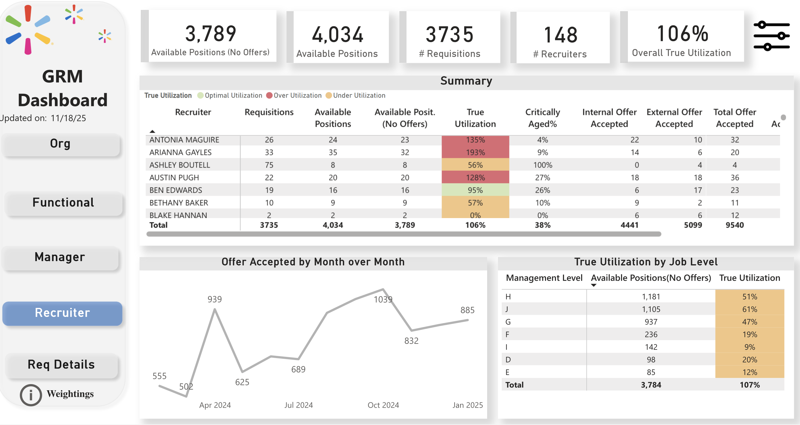
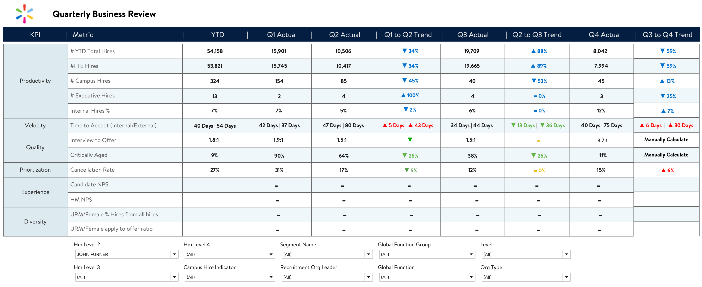
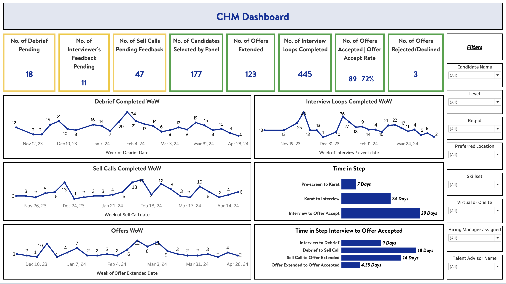
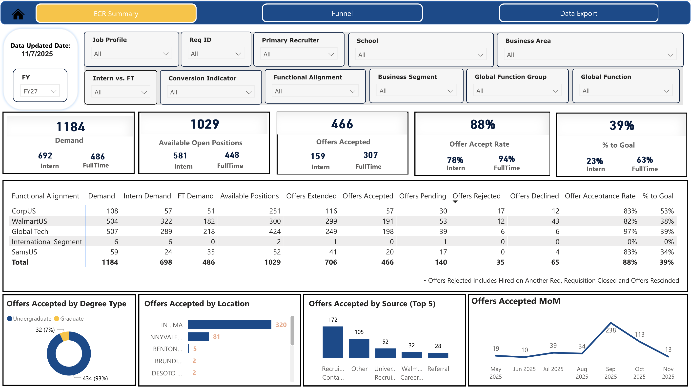

×

Digital Ops & Transformation | Data-Driven Decision Making
Transforming complex data into actionable business insights
Dynamic data analytics professional with extensive experience at Walmart Inc., delivering actionable insights through Power BI and Tableau. I specialize in strategic workforce planning, capacity management, and business intelligence—translating complex data challenges into clear, data-driven solutions that inform critical business decisions.
My expertise spans SQL-driven data integration, ad-hoc reporting with quick insights, and building robust data models that drive daily decision-making across organizations. I combine technical rigor with business acumen, designing dashboards that enable leaders to act decisively while championing analytics innovation and cross-functional collaboration. Proven track record of reducing insight delivery timelines by 40% and delivering measurable impact through strategic analytics initiatives. Recognized as an AI Champion within my team for driving innovation and exploring emerging AI/ML applications in analytics.
Power BI, Tableau
SQL, Workday API, Data Integration
Advanced Modeling, Forecasting, Capacity Analysis
Predictive Analytics, Machine Learning Applications
Capacity Management & Workforce Optimization
A major retail organization lacked visibility into recruiting team capacity and utilization. With 200+ recruiters managing thousands of requisitions across multiple business functions, recruitment team leaders had no data-driven way to make daily staffing decisions when new roles came in to hire.

Executive Reporting & Performance Analytics
Recruiting senior leadership needed quarterly business reviews with stakeholders to report hiring performance and productivity. The manual process involved time-consuming PowerPoint exports, inconsistent metrics across teams, and delayed decision-making due to report preparation time.

Accelerated Hiring Pipeline & Visibility Dashboard
Global Tech launched a new accelerated hiring initiative to bring in high-quality candidates quickly. As a trial program with new processes, there was no centralized system to track candidate progress, pipeline stages, or hiring velocity. Recruiters were manually entering data with no visibility into the hiring funnel, making it impossible for leaders to monitor the initiative's performance or bottlenecks.

Campus Recruitment & Intern Conversion Analytics
Walmart's Early Careers team needed to track intern hiring, intern-to-fulltime conversions, and campus recruitment on a different fiscal year cycle than the main recruiting organization. While candidate data existed in Workday, key fields required for comprehensive early career metrics were not captured in the main data structure. Additionally, diversity and inclusion metrics required legal and compliance approvals before they could be tracked and reported.

Collaborative Design & Agile Stakeholder Alignment
Analytics team builds scalable dashboards for diverse stakeholders with varying expectations around design, functionality, and user experience. With a distributed team model collaborating heavily with international teams, there were significant challenges: misaligned expectations on look-and-feel, confusion over requirements, and inefficient communication across time zones and locations, resulting in rework and extended delivery timelines.
Quick analyses and strategic insights delivered to address critical business questions and enable rapid decision-making.
Challenge: WMUS team needed visibility into time-in-stage metrics to identify bottlenecks and improve hiring velocity.
Analysis: Conducted granular time-in-step analysis across each stage of the requisition lifecycle, identifying where candidates were spending excessive time in the pipeline.
Impact: Team gained clear visibility into process bottlenecks, enabling targeted process improvements and faster candidate progression through hiring stages.
Challenge: Leadership needed competitive intelligence on how Walmart's hiring strategy compared to competing organizations.
Analysis: Analyzed market hiring trends, compared competitor job families, management level hiring patterns, and recruitment strategies.
Impact: Competitive benchmarking informed strategic hiring decisions and enabled leadership to position Walmart's talent acquisition competitively.
Challenge: Organization underwent job pay matrix changes (legacy X4/X5 levels → new F/E/G/H levels), requiring impact analysis.
Analysis: Analyzed pay scale and management level distributions across the organization to assess impact of restructuring.
Impact: Provided data-driven insights to support organizational restructuring communications and workforce planning.
Challenge: Organization needed location data to support relocation policy development and implementation.
Analysis: Provided confidential associate location reporting for policy planning and decision-making.
Impact: Strategic location intelligence informed relocation policy creation and workforce distribution planning.
Challenge: Recruiting leaders needed to understand historical recruiter productivity and establish capacity baselines.
Analysis: Analyzed three fiscal years of recruiter hiring data by fiscal year, tracking requisitions closed, hires made, and workload distribution per recruiter.
Impact: Historical performance data informed resource capacity planning, requisition load allocation, and baseline expectations for recruiter productivity.
Challenge: Walmart needed visibility into career progression from store associates to corporate roles through the Live Better U program.
Analysis: Analyzed Live Better U participant data with focus on degree/course completion and transitions into Home Office roles, specifically Software Engineer pathways.
Impact: Program data demonstrated talent pipeline potential, supporting investment decisions and talent development strategy.
Challenge: Organization lacked unified visibility into internal hiring and talent movement across multiple systems.
Analysis: Led initiative to build first unified dashboard combining two ATS systems, recruiting data, and internal movement data in single platform.
Impact: First dashboard to integrate multiple talent acquisition systems, providing end-to-end talent pipeline visibility and supporting internal mobility strategy.
I'd love to discuss how my analytics expertise can help you. Feel free to reach out!